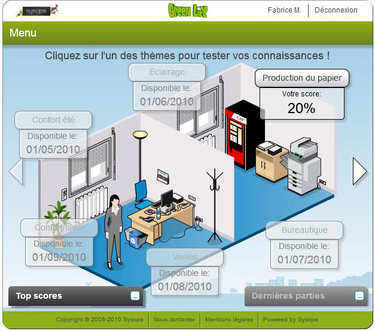

I'm a full-stack Java developer who loves working in diverse teams with passionate people. When I'm not building products with an amazing team I'm attending conferences & meetups to see & talk to other developers. On my spare time, I'm volunteering. And I like to travel all over the world with my boy & my wife.
About Me
Projects I've worked on

Processing documents to feed Lexis 360
I've processed documents to be available into the web plateform for all customers. I've also maintained and made evolutions on the Semantic engine that is used to search documents.

Greenlife office - awareness of eco gestures at the office
I've participated on the development of the game engine which had been migrated from PHP to JAVA. Then, I've developped a JSF web app to manage the game contents. The front-end of Green life is in Adobe Flash. This game had been deployed in town halls
Work Experience
JEE Software Engineer - BRED Banque Populaire (2014 - Present)
- Design, program and maintain banking Web software.
- Participate in the integration of a software package to improve the management of litigation.
- Providing tools to administer the product catalog.
- Develop applications to comply with regulations.
- Write technical specifications in English for the service center in Thailand.
Using Java / JEE, Spring Boot, Cobol, GWT, Jenkins, Maven, DataStage, Enterprise Architect.
Java Software Engineer - SFR SA for SOAT (Mar. 2014 - Oct. 2014)
- Participate in the development of the optical fiber deployment management application in France.
- Implement test worflow into software creation to ensure quality and non-regression.
- Project managed in Scrum.
Using JSF, Apache CXF, Spring Framework, Hibernate, Liquibase, AssertJ, JBOSS, TDD, Maven, Jenkins, GIT.
Java Software Engineer - LexisNexis France for SOAT (Sep. 2012 - Feb. 2014)
- Develop various components involved in the production of documents for the website http://www.lexis360.fr and its derivatives.
- Maintain a thematic document reconciliation service (Lexis Explore).
- Design document processing applications.
- Design a web service to export documents on demand.
- Design software for supervising the manufacture and publication of journals.
- Improve performance and eliminate software memory leaks.
- Projects managed in Scrum.
Using Spring MVC, Apache CXF, UNITEX, Selenium, Mockito, Fest Assert, XML Technologies, Semantic Web Technologies, MarkLogic, OpenRDF Sesame, ITM Mondeca, Documentum, Guava, Apache TOMCAT, JBOSS, Maven and Subversion.
JEE Software Engineer Apprentice - Essilor International (Sep. 2009 - Sep. 2012)
- Design a JEE application for planning the production of glasses.
- Develop a product catalog presentation portal.
- Carry out business test campaigns at the level of information systems in upstream of the launch of new products.
- Support laboratory computer systems at subsidiary level European.
- Realize knowledge management software (C # .net).
Using the Google Web Toolkit with SmartGWT, Oracle 9i, Maven, Subversion, Hibernate, JQuery, Javascript and Microsoft Sharepoint 2007.
Junior JEE Software Engineer trainee - Sysope (new Calculeo - Ecole Centrale Paris) (Jun. 2009 - Sep. 2009)
- Migrate a Java engine for a Serious Game platform.
- Create a content management tool for games with Java technology Server Faces (Rich Internet Application).
Junior .Net Software developer trainee - Kyocera Mita France (Apr. 2008 - Jul. 2008)
- Retouch the interfaces of a house ERP for the management of incident tickets.
- Realize a web application to facilitate the management of staff and computer assets.
- Develop dashboards for monitoring customer service performance
Tools: C # .Net, SQL Server 2005, Crystal Reports Training